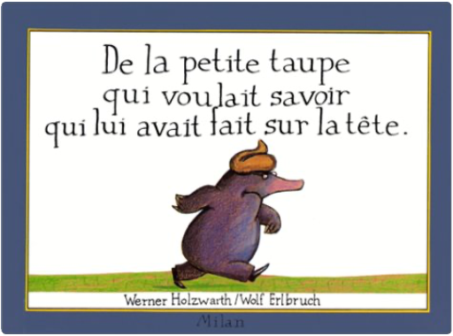

de la petite taupe qui voulait savoir qui lui avait fait sur la têtewerner holzwart  En sortant de chez elle, la petite taupe reçoit sur la tête, une énorme crotte non identifiée. Sploutch ! Pour trouver le responsable, elle mène l'enquête auprès des animaux qu'elle rencontre. Splatshsh ! Fait le pâté laiteux du pigeon... Pouf, pouf, le crottin du cheval... Ratatata, les petits haricots ronds du lapin... Jusqu'à ce qu'elle retrouve Jean-Henri, le chien du boucher ! Et cling ! La petite taupe se venge en déposant son (minuscule) forfait sur sa tête ! Scatologique à souhait, mais très drôle, l'histoire fascine et amuse les petits (dès deux ans). —Emmanuelle Figueras |


 Made with Delicious Library
Made with Delicious LibraryNancy, State zipflap congrotus delicious library Thomas, Julien